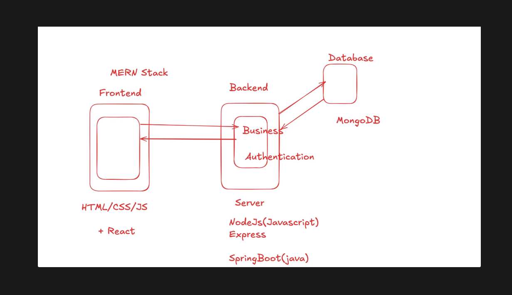
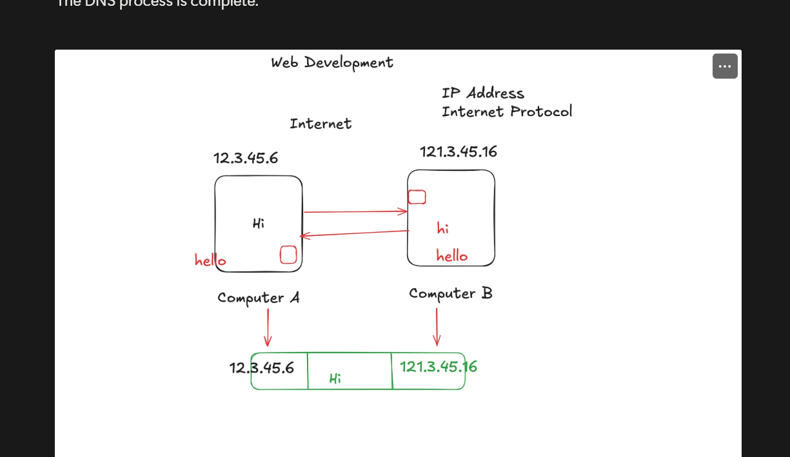
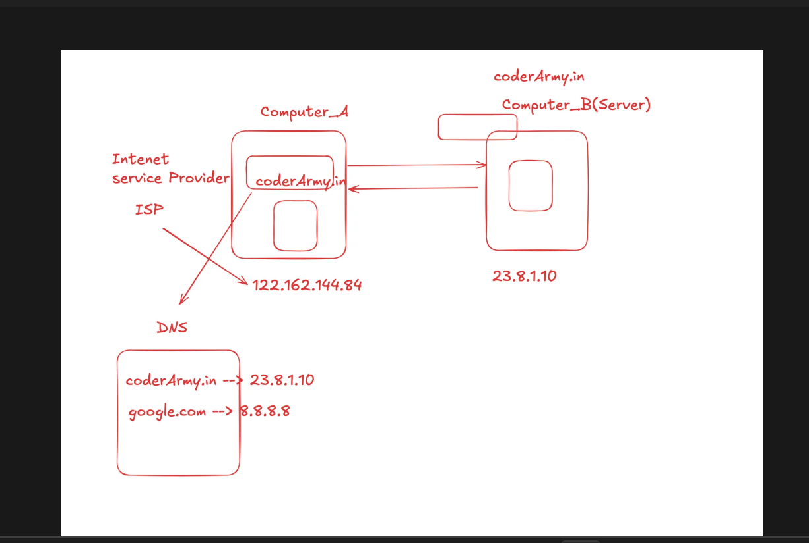
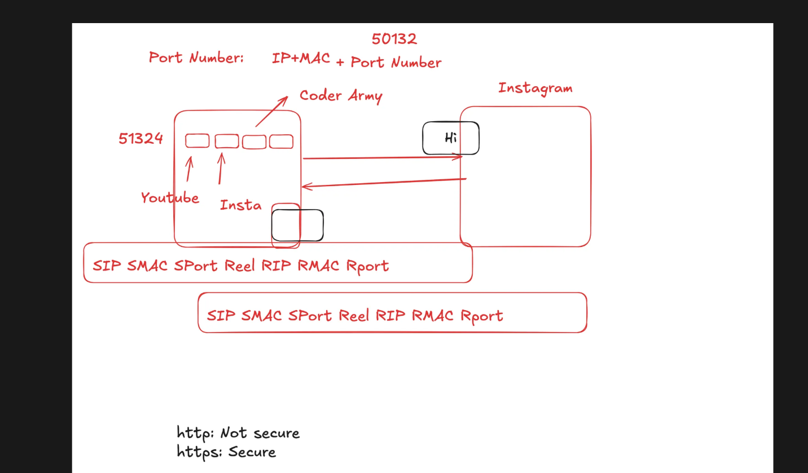

Web Development:
Web Development is the process of creating ,building and maintaing websites or web applications that run on the internet. It involves everything from designing how a website looks (fronted) to how it works behind the scenes(backend).
Fronted Development:
- Deals with the part of the website that users see and interact with.
- Uses languages likle HTML,CSS,JavaScript.
Focus :
layout,design ,user interface and responsiveness.
Backend Development:
- Handles the logic,database and server functionality.
- Uses languages like Python ,Java,Nodes.js.
Focus:
Data storage ,authentication,and communication with fronted.
Full-Stack Development:
- A combination of fronted + backend development.
- Full stack development can build a complete web application.

How Does Internet Work:
IP Address-
- An IPv4(internet protocol version 4) address is the classic IP address format everyone is used to seeing
Structure:
It's a 32-bit number.To make it readable for humans, we divide it into four 8-bit sections,and write each section as a decimal number from 0 to 255.

Public IP Address:
- A public IP address is your global ,unique address on the internet.
Purpose:
To be reachable from anywhere in the world.This is the address that web servers ,email servers and any other public service use.
Private IP Address:
- A Private IP address is a local address used only within your own private network.
Purpose:
To allow devices on the same local network to communicate with each other without needing a globally unique address for each one.

IPv6:
- IPv6(internet protocal version 6) is the next generation of the internet protocol.It's primary purpose was to solve the address exhaustion problem of IPv4.
MAC Address:
- A MAC( Media Access Control) Address is a unique , permanent serial number burned into every network-capable piece of hardware.
- A MAC address is a 48-bit number.To make it readable for humans ,it's typically written as 12 hexadecimal digits.
